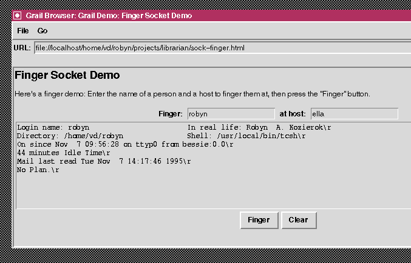
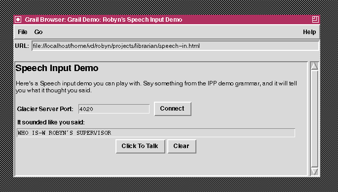
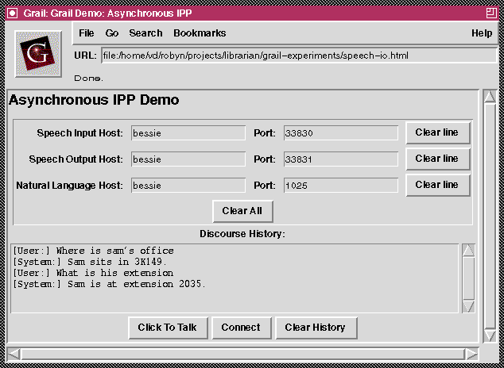

Figure 1: A sample IPP interaction.
Samuel Bayer
The MITRE Corporation
Robyn Kozierok
Jeffrey Kurtz
202 Burlington Rd.
Bedford, MA 01730
{sam,robyn,jkurtz}@mitre.org
Interfaces continue to evolve. In the beginning, there was unimodal interaction, via keyboard. As hardware and software technology evolved, the range of potential interactions increased substantially to include: mouse interaction and other pointing devices; graphical, audio and animated output; and (more recently) speech recognition and language understanding (for a summary, see Maybury (1995)). Until recently, there was only one possible ``host'' environment for applications offering such multimodal interactions: namely, a standalone application. The World Wide Web in general, and Web browsers in particular, have broadened the possibilities.
For instance, via CGI scripts, external applications can be spawned from Web browsers. Via forms interfaces and sophisticated applications of the HTTP protocol, Web browsers can serve as clients for remote services such as database queries (for a particularly sophisticated example, see Rice et al. (1995)). And finally, thanks to mobile code, there is the potential for sophisticated multimodal interactions to be hosted directly by Web browser environments; previous efforts in speech input, for instance, required modifications to the Web browser itself (see Novick and House (1994)).
The HCI group at the MITRE Corporation has been involved for many years in the design and construction of advanced multimodal interfaces involving language understand and generation, speech recognition and synthesis, interpretation of deixis and direct manipulation, and graphic design and presentation. One of our current research goals is to duplicate, in Web-hosted interactions, the entire range of communication supported in our previous work, and to reach beyond to asynchronous architectures. In this paper, we will describe some initial experiments and building blocks we've been pursuing in support of this goal.
The MITRE Corporation has been involved in research in intelligent human-computer interaction for approximately ten years. Our initial NL understanding system, King Kong, and its multimodal sister AIMI (An Intelligent Multimodal Interface) (Bayer and Vilain (1990), Burger and Marshall (1993)) are completely interpreted interfaces. That is, virtually every input and output is translated into (or out of) a rich, medium-independent semantic representation which exploits a model of the application domain. These systems share this property with systems like CUBRICON (Neal and Shapiro (1991)), WIP (André et al.), etc. The AIMI system featured input via text, mouse deixis, and direct manipulation, and output via text, graphs and map displays, all of which were interpreted and tracked as the interaction progressed.
More recently, we have developed a new sample application, the Intelligent Project Planner (IPP), which extends our exploration of modular, multimodal interaction. Specifically, it is the initial application of our fine-grained toolkit approach to multimodal interfaces, and adds speech recognition and synthesis to the range of I/O options. A sample IPP interaction is illustrated in figure 1.
Figure 1: A sample IPP interaction.
In this demo, the user can get information about employees, their charge distributions, schedules, supervisors, travel plans, etc. The demonstration consists of:
The flow of control of the interface is a simple synchronous pipeline architecture. The window interface communicates with Glacier and TrueTalk via spawned subshells; it interacts with the modules written in Common Lisp via the Lisp server. For instance, if the user asks ``Who is Robyn's supervisor'' via speech, the window interface invokes Glacier and waits for Glacier to return a string. The interface then passes a string to the Lisp server, where it is parsed, interpreted, passed through the discourse module, and translated into SQL. The Lisp server consults the SQL database and produces an answer, plans the presentation, and passes the data for presentation back to the window interface, which creates graphic displays or speech or text output depending on the type of output. In this case, the system would respond (via text or speech) ``Lynette supervises Robyn''. If the user were to ask ``What is Robyn working on in March'', the IPP might respond with a bar chart showing Robyn's charge distributions by project and time period. Our intention is to move this technology into a Web-hosted, asynchronous architecture.
In this section, we describe our step-by-step construction of multimodal interaction. We approached this task by creating a series of small sample applications, each demonstrating a piece of the total functionality we were aiming for. Each runs as either a stand-alone window-based application, or a Grail applet.
In order to allow multimodal interaction, we needed some way to communicate with the services available to provide the different modalities. Because of the limitations imposed by the rexec module used in Grail 0.1, we chose Python's built-in socket module. For further discussion of security issues, see the security section below.
As an initial exercise in socket communication, we built a simple finger tool (figure 2). This tool allows the user to specify a person to finger and a host to finger them at, connects to the host's finger port via the socket interface provided in Python, and returns the appropriate finger information to the user.

Figure
2: A simple finger client.
To demonstrate speech output capability, we built an application which speaks (via the TrueTalk speech synthesizer) the contents of an entry widget (see figure 3).

Figure 3: A speech
output client.
In order to interact with the speech synthesizer, we wrote a simple ``one-time-only'' server which listens for a connection on a given port, accepts a single connection, connects its stdin and stdout to the connection, and executes a single shell command. Using this server, we invoked the speech synthesizer so that it was listening on the port. Then, just as in the finger demo, we were able to connect to the socket, send the text to be spoken, and hear the results of TrueTalk processing it.
For speech input, we used our ``one-time-only'' server as described above, this time with the MITRE-built Glacier speech recognizer. The speech recognition grammar for this small demo was the grammar we used for the IPP. Then we were able to write a simple application where the user speaks a sentence (query) from that grammar, and the application reports the output of the speech recognizer (see figure 4).

Figure 4: A simple speech
input client.
In the IPP, understanding and generation of utterances of all sorts is handled via a group of Common Lisp modules. Communication with these modules is enabled by a socket-level Common Lisp server, based on interprocess communication code provided by Franz Inc. for its Unix implementation of Allegro Common Lisp. The initial implementation of this server could be paired with both C and Common Lisp clients; for this application, we added a Python client as well. Like tcl-dp and the Python remotecall module, the Lisp server itself supports proxies. The applet described in the next section illustrates this interaction.
In order to support the full range of interactions we desire, we require a fairly complex architecture. The reason we want multimodal interfaces to involve multiple interacting processes (such as speech services and interface processes as described above) is because we want both the interface and the utilized services (such as speech recognition, speech synthesis, etc.) to be interruptable. A user ought to be able to tell an interface to be quiet if the interface is speaking too long; a user ought to be able to cancel a request; a system ought to be able to ask the user clarification questions during processing. In all these cases, if the interface interacts synchronously with any of its services (say, if a callback invokes a language processing module and waits for its response), the interface will not execute any more events until that callback returns. There are some ugly ways around this problem in the synchronous paradigm, but the most elegant solution is for the callback to dispatch a request to another process, and enable that process to send a response to the interface process. In this way, the interface is available to process additional interface events while its peripheral services execute.
This architecture requires multiple processes to share objects, or proxies for objects; furthermore, the processes must be both clients of and servers for one another. We already have the pieces to construct this architecture. One potential piece of this architecture is Daniel Larsson's remotecall module, which supports remote execution of Python code.
Interfaces are already servers, essentially; they typically run an event loop which listens for input. The remotecall module is designed to make it easy to ask the interface to ``listen'' to a port in addition to listening for the normal interface events. In this way, it's possible to invoke a callback which corresponds to code evaluation from a remote process which is communicating with the interface via this additional port. To demonstrate this functionality, we built a simple application consisting of a scrolling text widget which can be cleared via a button in the interface. The Python object containing the text widget and scroll bar also defines a method for inserting text into the widget. Once the mainloop is called to allow GUI interaction, it is no longer possible to call any methods from that Python shell; however, the remotecall module allows us to communicate with the application from another process. Calls to the text_insert method of our application from another Python shell via remotecall allow text to be added to the widget, which is immediately reflected in the interface.
Another way of implementing asynchrony is to attach a callback not to a remotecall loop, but rather directly to the GUI's event loop. We used this latter technique in Tk to implement our final applet demo, which combines speech recognition, speech synthesis, and NL interaction asynchronously in a fragment of the IPP reconstructed in Python. The Tk application is instructed to listen for asynchronous input from speech input and NL processing via the createfilehandler method; input asynchronously received from speech recognition is passed to NL processing, and input asynchronously received from NL processing is passed to speech synthesis. This interaction is illustrated in Figure 5.

Figure 5: A fragment of the IPP
embedded in Grail.
One of the standard features of any multimodal interface is a pop-up dialogue window. In many cases, such windows are used for various types of transient queries, warnings and confirmations to the user. In this function, concerns of placement and screen real estate are minimal, since these pop-up windows are intended for immediate attention, and are dismissed as soon as the user interacts appropriately with them. However, there are other uses of pop-up windows which raise questions for Web-hosted interfaces.
For instance, the IPP uses pop-up windows as vehicles for graphical responses, as illustrated in figure 1. These windows are placed on the screen either automatically or by the user, depending on the user's window manager preferences. No issues of screen management are addressed, unfortunately. However, the problem is rendered somewhat more complicated in a Web-hosted interface, namely: if I present a graphical reply, where should it go? Should the interface provide a pop-up window outside the Web browser? Should it append the response to the current document being browsed? Should it provide a new document, as a forms interaction would? The additional range of presentation options raises a number of new questions about interface design and screen management.
As we've described above, we exploit a socket substrate for our interactions with external services, which is currently enabled in Grail 0.1. But because of restricted execution mode, Python extensions which are constructed on top of this substrate, such as Daniel Larsson's remotecall, must be shipped as part of the applet code; dynamically loaded C modules which are not compiled into the Grail executable, such as Farzad Farid's Python bindings for expect, cannot be loaded locally because opening files for any reason is blocked.
However, even this socket substrate presents an enormous security problem. For instance, an applet could exploit security holes in any available TCP server protocol on the local machine. But if this security problem were eliminated -- that is, if socket interaction were disabled in Grail -- we would face a significant difficulty for Web-hosted multimodal interaction.
It might be possible, for instance, to access services on the Web server where the applet originates via HTTP. However, if we intend applet-based graphical interfaces to exploit locally available services, we must be able to communicate with the local operating system. Of course, not all interactions with the local operating system are deemed dangerous; the most obvious examples are keyboard and mouse input and visual output, all of which may be (in fact, must be) accessed by Grail and the applets it runs. These devices are deemed safe (or, perhaps more correctly, must be deemed safe in order to have any interaction at all). In the long run, it might be possible to ``license'' other, higher-level devices as well, such as speech and gesture recognition and speech synthesis.
Part of this task is standardization of the services provided by these high-level devices. For instance, there are at least two standardization efforts underway for speech recognition, including the Novell-led SRAPI consortium and Microsoft's SAPI effort. In addition, it is part of the long-range CORBA strategy to codify and support services at a range of levels, from simple naming services to components of tools like word-processing programs; certainly, at the level of sophistication intelligent multimodal interaction is attempting, only speech services are even close to being susceptible to this sort of codification. If access to such devices were deemed safe and compiled into interface applications, much as keyboard and screen access is, the problem of multimodal interaction in Web browsers would be somewhat reduced.
Another, related possibility is the Java strategy of trusted code, which will allow only code designated as trustworthy to execute without restrictions (for details, see Sun Inc. (1995)). This strategy provides us with a slightly wider range of options; however, the code which interacts with these external interface services would still need to be identified as trustworthy in some way. It will never be appropriate, from a security point of view, to allow access to arbitrary local services.
As our description of the IPP shows, the evolution of the ``host environment'' for multimodal interaction is not the only parameter of change we and others foresee. Where interaction is uninterpreted now, we and others foresee that it will be interpreted in the future; where the standard is so-called ``WIMP'' interaction today, we and others foresee that the future holds a far wider range of modalities, such as speech recognition and synthesis, language understanding and generation, and gesture recognition and animation; where interaction modalities are by and large locally available now, we and others foresee a distributed network of services supported by architectures such as CORBA (see, for example, the work on the Fresco user interface toolkit (Bohm (1995))). Our current research program is targeted specifically at supporting this migration. In this document, we've described some of the experiments which we're conducting to support one dimension of this migration.
Elisabeth André et al. (1993). ``WIP: The Automatic Synthesis of Multimodal Presentations.'' In Maybury (1993).
Samuel Bayer and Marc Vilain (1990). ``The Relation-Based Knowledge Representation of KING KONG.'' Presented at the AAAI Spring Symposium on Implemented Knowledge Representation Systems.
Samuel Bayer, Erica Bernstein, David Duff, Lynette Hirschman, Susann LuperFoy, and Margot Peet (1995). ``Spoken Language Understanding: Report on the MITRE Spoken Language System''. Presented at the ARPA SLS Workshop, Austin, TX, January 1995.
Denis Bohm (1995). ``Fresco - A Fresh Approach to User Interface Systems.'' http://www.faslab.com/fresco/HomePage.html
John Burger and Ralph Marshall (1993). ``The Application of Natural Language Models to Intelligent Multimedia.'' In Maybury (1993).
Michael Elhadad (1993). ``FUF: the Universal Unifier: User Manual, Version 5.2.'' Manuscript.
Mark Maybury, ed. (1993). Intelligent Multimedia Interfaces. AAAI Press: Menlo Park.
Mark Maybury (1995). ``Research in Multimedia and Multimodal Parsing and Generation.'' Artificial Intelligence Review 9, pp. 103-127.
Jeannette Neal and Stuart Shapiro (1991). ``Intelligent Multi-media Interface Technology.'' In Sullivan and Tyler (1991).
David Novick and David House (1994). ``Spoken Language Access to Multimedia (SLAM): A Multimodal Interface to the World-Wide Web.'' Technical Report CSE-95-008, Department of Computer Science and Engineering, Oregon Graduate Institute of Science and Technology. Available at ftp://www-ksl.stanford.edu/pub/KSL_Reports/KSL-95-69.ps
Joseph Sullivan and Sherman Tyler (1991). Intelligent User Interfaces. ACM Press Frontier Series. ACM Press: New York.
Sun Inc. (1995). ``HotJava: The Security Story.'' http://java.sun.com/1.0alpha3/doc/security/security.html